【行者无疆·渝见非遗】寻访匠心：在重庆，触摸非遗的呼吸与心跳

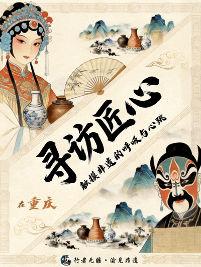

【开篇：为何出发】
点击碎纸，看清信件
第一章：土壤 ——
在母城，我们探寻非遗何以生根
一切始于“母城”。在那座城市的记忆编码里，我们第一次读懂了非遗并非孤立的技艺，而是一方水土集体性格的呼吸与心跳。它源自江畔的劳作、山城的坚韧、市井的烟火。母城非遗馆的每一件陈列，都在告诉我们：真正的传承，首先要理解的，是技艺赖以生长的文化土壤。这土壤，决定了所有故事最初的模样。而在体验中心，当讲解老师将陶器火候、绣品针法转化为一代代传承人的生命故事时，我们触摸到了非遗最本真的温度：它不仅是技艺，更是人的温度与光阴的沉淀。首日，我们理解了传承的前提——尊重并读懂那方孕育一切的文化土壤。
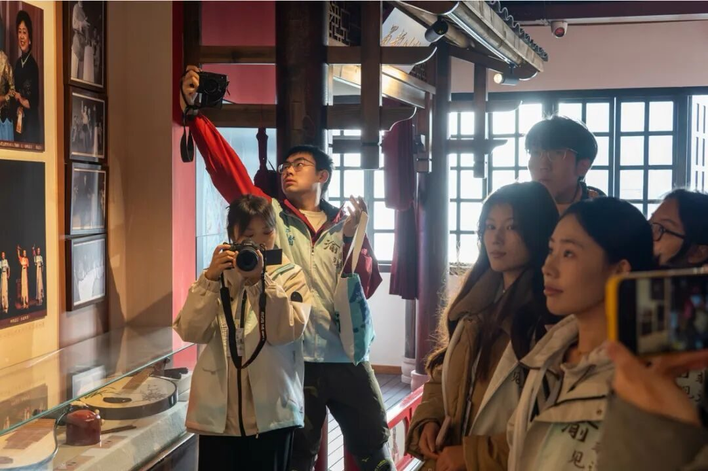
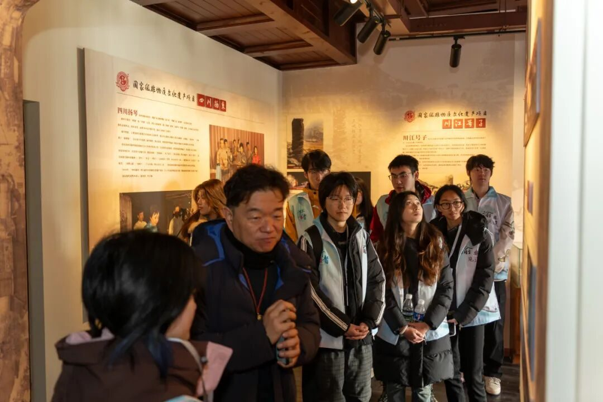

第二章：脉络 ——
于历史长河，
我们触摸精神血脉，打捞星光
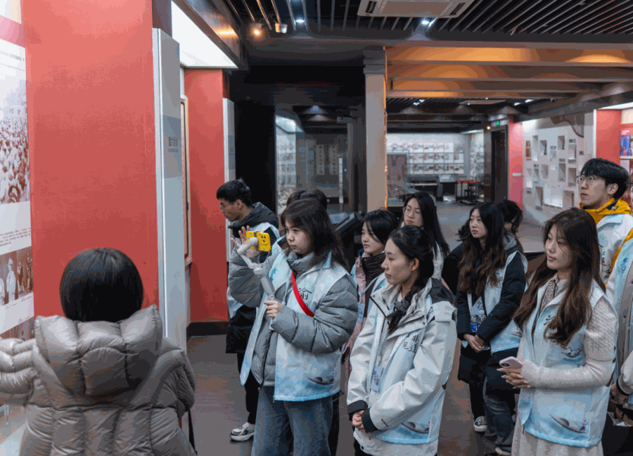

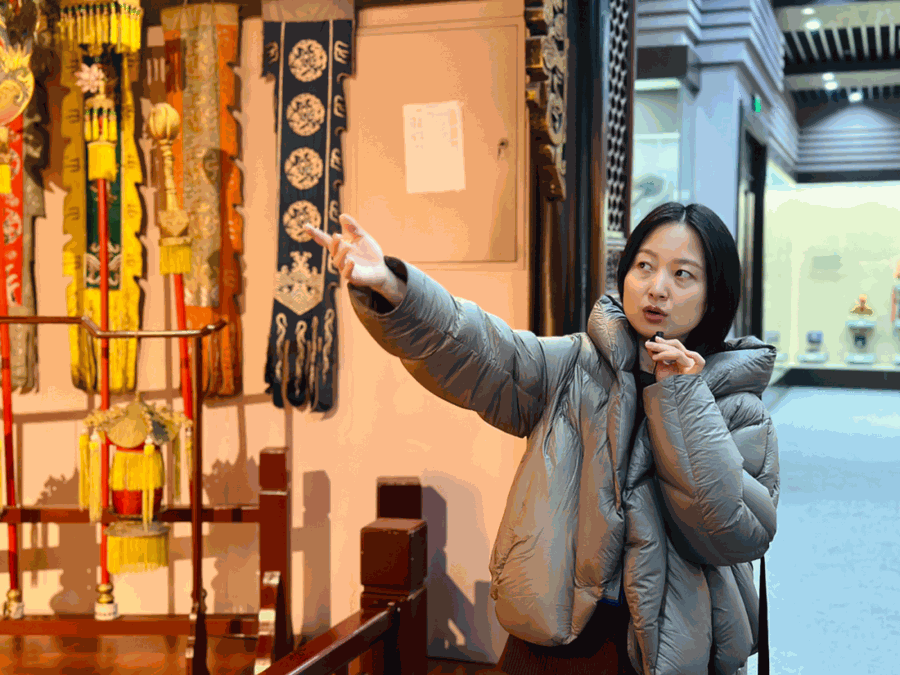

继而，我们走入历史的纵深。在重庆川剧博物馆，沈铁梅老师的艺术人生让我们震撼：真正的传承大师，是那些既能深潜传统内核、又能勇敢为其赋新魂的人。在三峡博物馆的宏大叙事里，从远古巴人的青铜到抗战烽火中的脊梁，一件文物就是一段文明的切片。尤其是江姐那穿透岁月的精神之光，让我们顿悟：技艺传承的底层，是更为坚韧的精神脉络。这脉络，关乎坚守、关乎信仰、关乎一个民族在困顿中向上生长的力量。它，是非遗得以不朽的灵魂骨架。

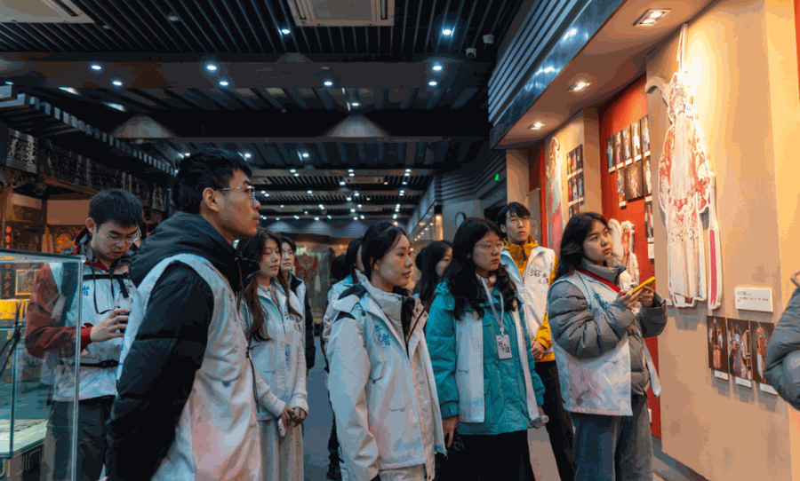

第三章：坚守 ——
在折扇厂，我们见证指尖的修行

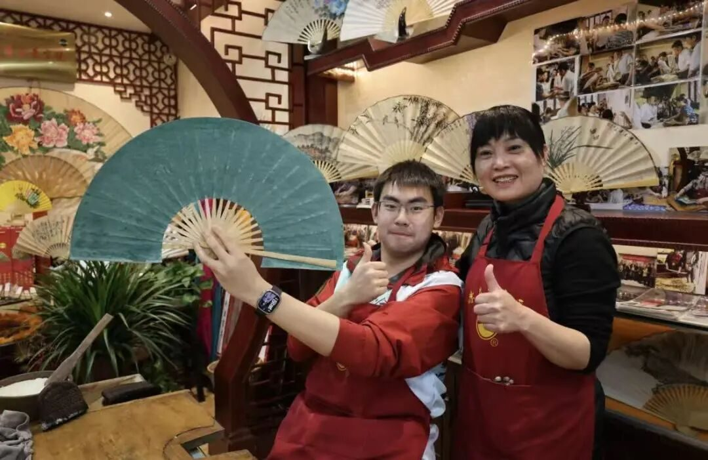
走进荣昌折扇厂，匠心从宏大叙事落于纤毫之间。尹春莲阿姨家族几代人的故事，与那“薄如蝉翼”的扇面一同展开。我们目睹了竹条在匠人手中驯服，更在亲手穿扇的笨拙中，体味到“坚守”二字真实的分量。它无关辉煌，而是日复一日与材料对话的耐心，是抵御时间稀释的执着。这份指尖的修行，是传承最朴素的底色。
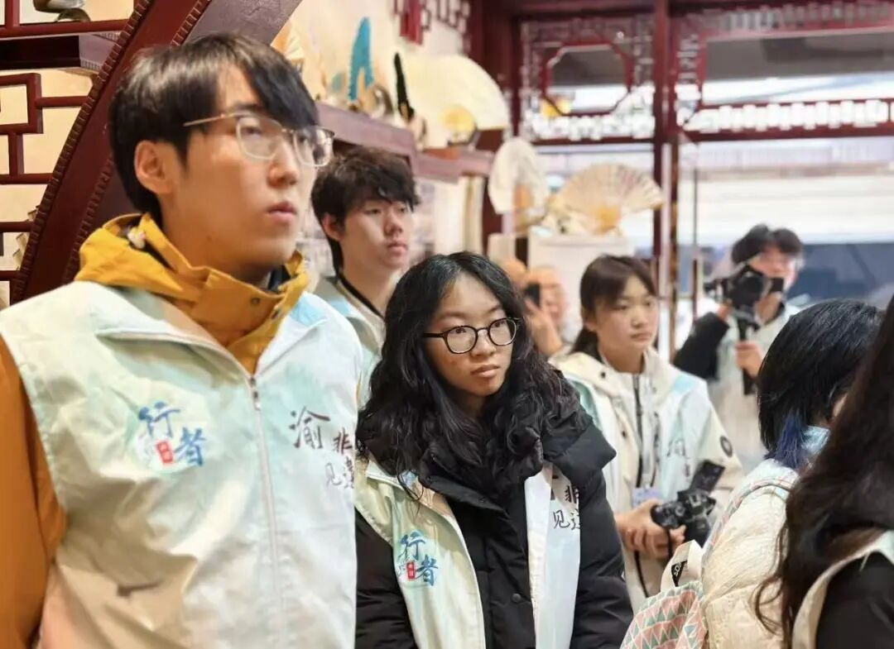
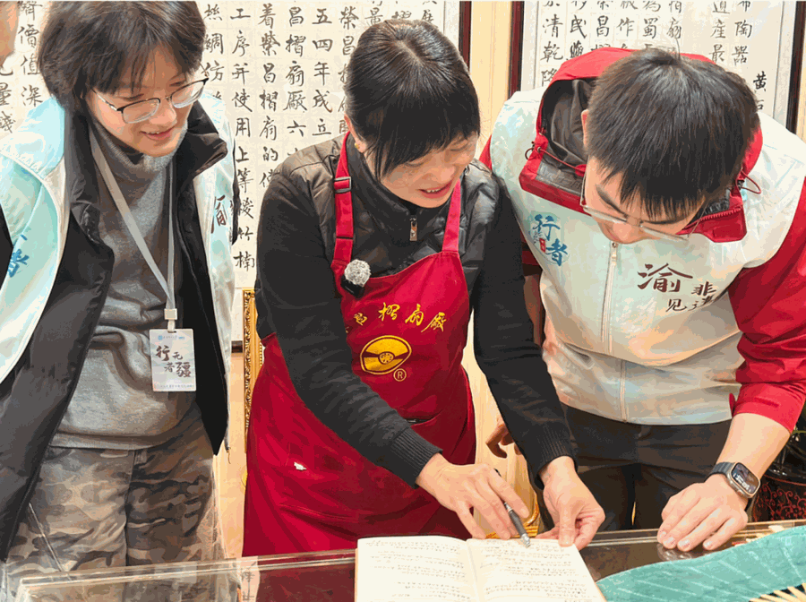
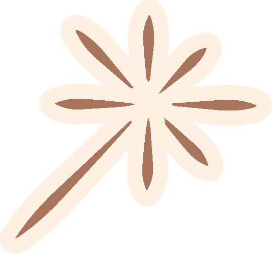
第四章：对话 ——
访陶窑与匠坊，
我们倾听火与土的哲学
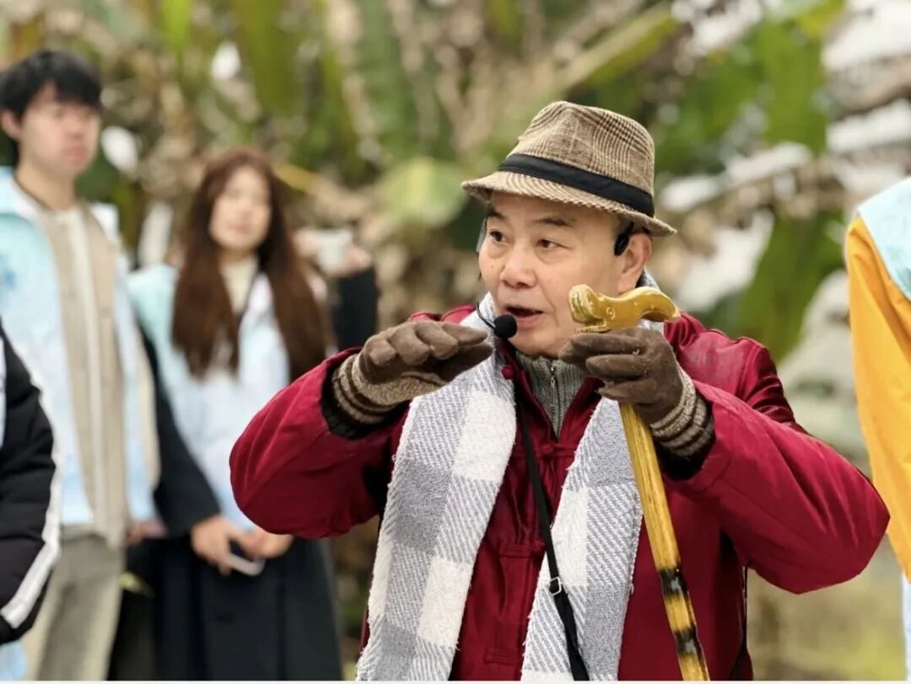
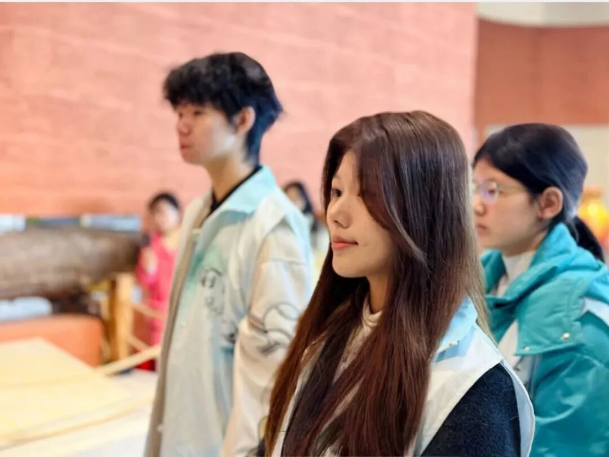

荣昌的陶土，为我们揭示了传承中充满张力的一面。清晨的夏兴古窑遗址，是沉睡的源头，诉说着“窑火十里”的往昔；午后的刘吉芬老师工作室，是活跃的现场，展示着泥土如何说出当代的语言。这趟从古窑到今坊的穿越，让我们明白，真正的传承，是一场持续的古今对话。匠人一手伸向传统，汲取千年窑火的智慧；一手伸向未来，让泥土说出当代的语言。传承，在对话中完成迭代与新生。
第五章：经纬 ——
于夏布小镇，
我们悟得传承的真意
最后一站，荣昌夏布博物馆。当目光从飞梭织布的华彩，移向织前那沉默而严谨的“打麻、牵线、穿筘”，传承的终极隐喻豁然开朗。经纬之妙，不在最后的交织成锦，而在于每一根线都安于其位、忠于其序的“织前功夫”。这恰如文化传承的真谛：它不仅需要灵感的闪耀，更需要社会维度上对基础价值的确认、对技艺秩序的尊重、对传承脉络的细心养护。一线一纬，方能致广大而尽精微。
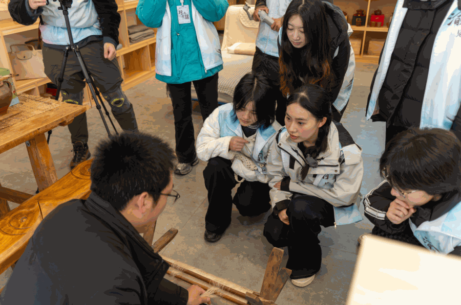
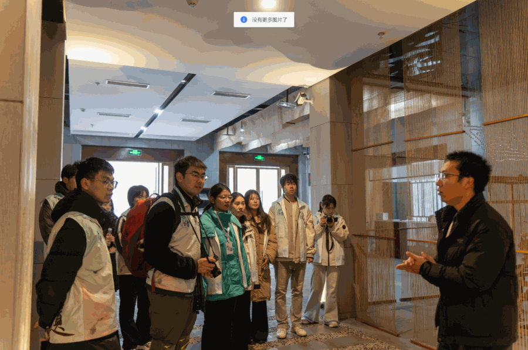
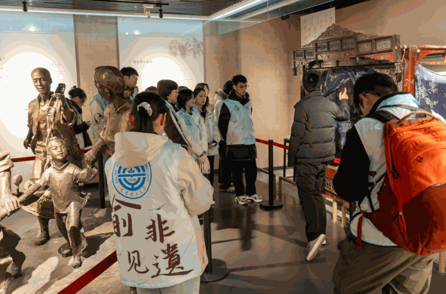
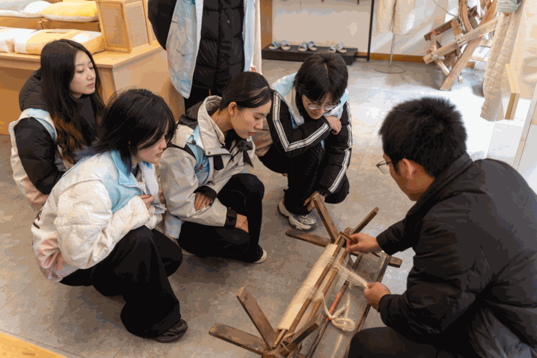
【终章：心之所向】


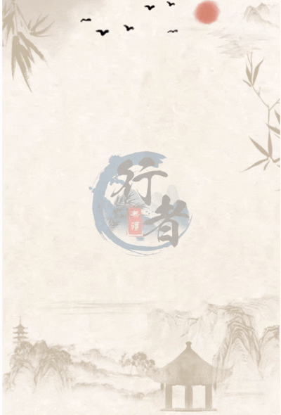
行者无疆
来源 | 行者无疆实践团
文字 | 周星焱
图片 | 行者无疆实践团
编辑 | 刘辰锡 冯语城
审核 | 刘辰锡
责编 | 邹靓靓 周 亮